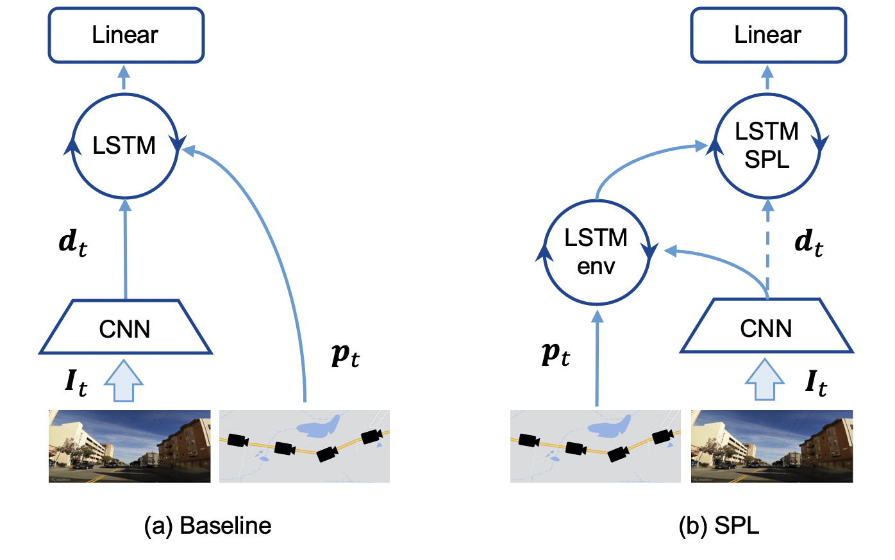

{{ page.title }}
Marvin Chancán Michael Milford
QUT
ArXiv:2103.02074, March 2021 (Submitted to RSS 2021)

|
Abstract
Sequential matching using hand-crafted heuristics has been standard practice in route-based place recognition for enhancing pairwise similarity results for nearly a decade. However, precision-recall performance of these algorithms dramatically degrades when searching on short temporal window (TW) lengths, while demanding high compute and storage costs on large robotic datasets for autonomous navigation research. Here, influenced by biological systems that robustly navigate spacetime scales even without vision, we develop a joint visual and positional representation learning technique, via a sequential process, and design a learning-based CNN+LSTM architecture, trainable via backpropagation through time, for viewpoint- and appearance-invariant place recognition. Our approach, Sequential Place Learning (SPL), is based on a CNN function that visually encodes an environment from a single traversal, thus reducing storage capacity, while an LSTM temporally fuses each visual embedding with corresponding positional data--obtained from any source of motion estimation--for direct sequential inference. Contrary to classical two-stage pipelines, e.g., match-then-temporally-filter, our network directly eliminates false-positive rates while jointly learning sequence matching from a single monocular image sequence, even using short TWs. Hence, we demonstrate that our model outperforms 15 classical methods while setting new state-of-the-art performance standards on 4 challenging benchmark datasets, where one of them can be considered solved with recall rates of 100% at 100% precision, correctly matching all places under extreme sunlight-darkness changes. In addition, we show that SPL can be up to 70x faster to deploy than classical methods on a 729 km route comprising 35,768 consecutive frames. Extensive experiments demonstrate the potential of this framework through quantitative and qualitative results.
|
Preprint: [PDF]
ArXiv: [ABS]
Codebase: [GitHub]
|
NeurIPS 2020 Workshop Paper
|
Bibtex
@article{chancan2021spl,
author = {Marvin {Chanc\'an} and Michael Milford},
title = {Sequential Place Learning: Heuristic-Free High-Performance Long-Term Place Recognition},
journal = {arXiv preprint arXiv:2103.02074},
year = {2021}
}
@article{chancan2020deepseqslam,
author = {Marvin {Chanc\'an} and Michael Milford},
title = {DeepSeqSLAM: A Trainable CNN+RNN for Joint Global Description and Sequence-based Place Recognition},
journal = {arXiv preprint arXiv:2011.08518},
year = {2020}
}